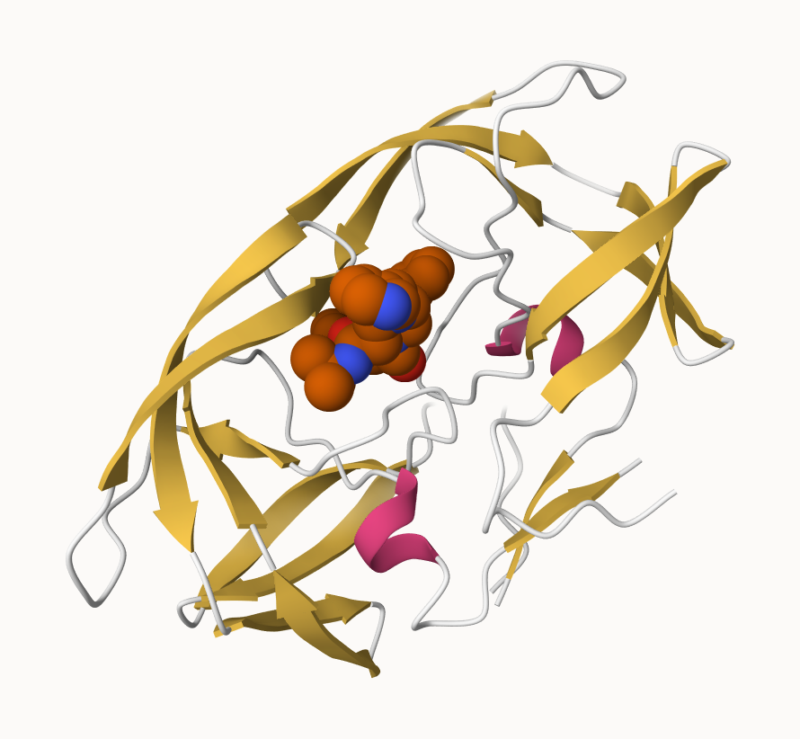
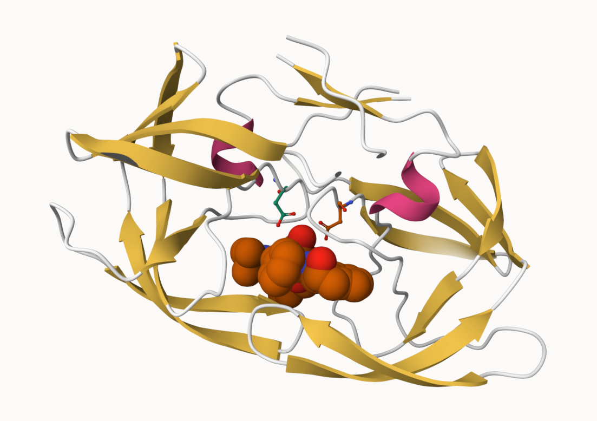
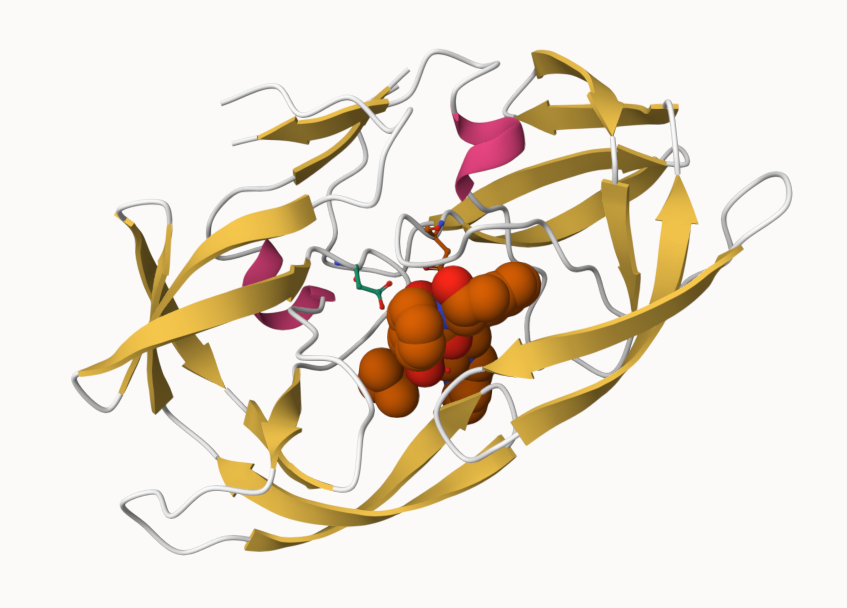

184362/219140[1] 0.8412978The PDB is the major repository of information about the 3D structures of large biological molecules, including proteins and nucleic acids. Understanding the shape of these molecules helps to understand how they work and deduce the role of structure in human health. The structures in PDB range from bits of DNA/RNA to complex machines of many chains of protein.
We will use the main US based PDB website.
Q1. What percentage of structures in the PDB are solved by X-Ray and electron microscopy?
184362/219140[1] 0.841297884.13% of entries are solved with X-Ray
20191/219140[1] 0.092137459.21% of entries are solved with electron microscopy.
Q2. What proportion of structures in the PDB are protein?
189750/219140[1] 0.865884886.59% of structures are protein only.
Q3. Type HIV in the PDB website search box on the home page and determine how many HIV-1 protease structures are in the current PDB:
There are 868 structures in the PDB for HIV-1 protease.
Download the “PDB File” fo the HIV-1 protease structure with the PDB identifier 1HSG.
To view the contents in the Terminal, use less ~/Downloads/1hsg.pdb
The file contains a list of all the atoms in the molecule with their positions defined by X, Y, and Z coordinates. Additional data such as secondary structure elements are commonly also included.
HIV-1 protease is vital for HIV replication, cleaving newly formed polypeptide chains to form functional proteins. Drugs that target this protein could be vital for suppressing viral replication.
In this section, we’ll use the X-ray crystal structure with a bound drug (indinavir) and the Mol* molecular viewer to visually inspect the protein, binding site, and drug molecule. Then we will perform bioinformatics analysis of single and multiple crystallographic structures.
Image of HIV-Pr

HIV-Pr with Asp25 featured

Q4. Water molecules normally have 3 atoms, why do we see just one atom per water molecule in this structure?
A water molecule has 2 hydrogens and 1 oxygen, in this structure, hydrogens are not included since it would make the structure harder to see. Instead they include just the oxygen atom for each water molecule.
Q5. There is a critical “conserved” water molecule in the binding site, can you identify the molecule? What residue number does this molecule have?
The conserved water molecule is at number 308.
Q6. Generate and save a figure clearly showing the two distinct chains of HIV-protease along with the ligan. You might also consider showing the catalytic residues ASP 25 in each chain and the critical water.

Bio3D is an R package for structural bioinformatics, including features to read, write, and analyze biomolecular structure, sequence, and dynamic trajectory data.
library(bio3d)pdb <- read.pdb("1hsg") Note: Accessing on-line PDB filepdb
Call: read.pdb(file = "1hsg")
Total Models#: 1
Total Atoms#: 1686, XYZs#: 5058 Chains#: 2 (values: A B)
Protein Atoms#: 1514 (residues/Calpha atoms#: 198)
Nucleic acid Atoms#: 0 (residues/phosphate atoms#: 0)
Non-protein/nucleic Atoms#: 172 (residues: 128)
Non-protein/nucleic resid values: [ HOH (127), MK1 (1) ]
Protein sequence:
PQITLWQRPLVTIKIGGQLKEALLDTGADDTVLEEMSLPGRWKPKMIGGIGGFIKVRQYD
QILIEICGHKAIGTVLVGPTPVNIIGRNLLTQIGCTLNFPQITLWQRPLVTIKIGGQLKE
ALLDTGADDTVLEEMSLPGRWKPKMIGGIGGFIKVRQYDQILIEICGHKAIGTVLVGPTP
VNIIGRNLLTQIGCTLNF
+ attr: atom, xyz, seqres, helix, sheet,
calpha, remark, callQ7. How many amino acid residues are in this pdb object?
There are 198 amino acid residues
Q8. Name one of the two non-protein residues:
HOH
Q9. How many protein chains are in this structure?
There are 2 protein chains
Note that the attributes of the object are listed at the end, to find the attributes of any such object use:
attributes(pdb)$names
[1] "atom" "xyz" "seqres" "helix" "sheet" "calpha" "remark" "call"
$class
[1] "pdb" "sse"To access these individually use $ like R list objects. For example, to find the atom attribute:
head(pdb$atom) type eleno elety alt resid chain resno insert x y z o b
1 ATOM 1 N <NA> PRO A 1 <NA> 29.361 39.686 5.862 1 38.10
2 ATOM 2 CA <NA> PRO A 1 <NA> 30.307 38.663 5.319 1 40.62
3 ATOM 3 C <NA> PRO A 1 <NA> 29.760 38.071 4.022 1 42.64
4 ATOM 4 O <NA> PRO A 1 <NA> 28.600 38.302 3.676 1 43.40
5 ATOM 5 CB <NA> PRO A 1 <NA> 30.508 37.541 6.342 1 37.87
6 ATOM 6 CG <NA> PRO A 1 <NA> 29.296 37.591 7.162 1 38.40
segid elesy charge
1 <NA> N <NA>
2 <NA> C <NA>
3 <NA> C <NA>
4 <NA> O <NA>
5 <NA> C <NA>
6 <NA> C <NA>Let’s read a new PDB structure, Adenylate Kinase, and perform Normal mode analysis (NMA).
adk <- read.pdb("6s36") Note: Accessing on-line PDB file
PDB has ALT records, taking A only, rm.alt=TRUEadk
Call: read.pdb(file = "6s36")
Total Models#: 1
Total Atoms#: 1898, XYZs#: 5694 Chains#: 1 (values: A)
Protein Atoms#: 1654 (residues/Calpha atoms#: 214)
Nucleic acid Atoms#: 0 (residues/phosphate atoms#: 0)
Non-protein/nucleic Atoms#: 244 (residues: 244)
Non-protein/nucleic resid values: [ CL (3), HOH (238), MG (2), NA (1) ]
Protein sequence:
MRIILLGAPGAGKGTQAQFIMEKYGIPQISTGDMLRAAVKSGSELGKQAKDIMDAGKLVT
DELVIALVKERIAQEDCRNGFLLDGFPRTIPQADAMKEAGINVDYVLEFDVPDELIVDKI
VGRRVHAPSGRVYHVKFNPPKVEGKDDVTGEELTTRKDDQEETVRKRLVEYHQMTAPLIG
YYSKEAEAGNTKYAKVDGTKPVAEVRADLEKILG
+ attr: atom, xyz, seqres, helix, sheet,
calpha, remark, callNMA is a stuctural bioinformatic method to predict protein flexibility and potential functional motions.
# Perform flexibility prediction
m <- nma(adk) Building Hessian... Done in 0.015 seconds.
Diagonalizing Hessian... Done in 0.272 seconds.plot(m)
To view a “movie” of these motions we can generate a molecular “trajectory” with the mktrj() function.
mktrj(m,file="adk_m7.pdb")In this section we’ll perform PCA on the complete collection of Adenylate Kinase structures in PDB. This is a ubiquitous enzyme that functions to maintain equilibrium of cytoplasmic nucleotides. It catalyzes the transfer of a phosphoryl from ATP to AMP, which requires a rate limiting conformational transition.
The bio3d pca() function provides a convenient interface for PCA of structure data. It can be used to capture major variations in a set of structures, making interpretation of conformational states more clear.
Search the entire PDB for structures related to 1AKE, superpose identified structures, perform PCA, and calculate normal modes of each individual structure to probe for potential differences in structural flexibility.
Have bio3d, devtools, biocmanager, msa, and bitbucket downloaded.
Q10. Which of the packages above is found only on BioConductor and not CRAN?
msa
Q11. Which of the above packages is not found on BioConduction or CRAN?
bio3d-view
Q12. True or false: Functions from the devtools package can be used to install packages from GitHub and BitBucket.
True
Perform a blast search of the PDB database to identify related structures to ADK. Use get.seq() to fetch ADK and blast.pdb() to search.
library(bio3d)
aa <- get.seq("1ake_A")Warning in get.seq("1ake_A"): Removing existing file: seqs.fastaFetching... Please wait. Done.aa 1 . . . . . 60
pdb|1AKE|A MRIILLGAPGAGKGTQAQFIMEKYGIPQISTGDMLRAAVKSGSELGKQAKDIMDAGKLVT
1 . . . . . 60
61 . . . . . 120
pdb|1AKE|A DELVIALVKERIAQEDCRNGFLLDGFPRTIPQADAMKEAGINVDYVLEFDVPDELIVDRI
61 . . . . . 120
121 . . . . . 180
pdb|1AKE|A VGRRVHAPSGRVYHVKFNPPKVEGKDDVTGEELTTRKDDQEETVRKRLVEYHQMTAPLIG
121 . . . . . 180
181 . . . 214
pdb|1AKE|A YYSKEAEAGNTKYAKVDGTKPVAEVRADLEKILG
181 . . . 214
Call:
read.fasta(file = outfile)
Class:
fasta
Alignment dimensions:
1 sequence rows; 214 position columns (214 non-gap, 0 gap)
+ attr: id, ali, callQ13. How many amino acids are in this sequence?
There are 214 amino acids
Now use this as a query to BLAST search PDB:
#b <- blast.pdb(aa)
# Running the blast causes the pdf rendering to get stuck at this chunk for 5+ minutesplot.blast() can be used to visualize and filter BLAST results by setting a seed position to the point of largest drop-off in normalized scores. Here we can specify only the relevant E. coli structures:
# Plot a summary of search results
#hits <- plot(b)I got the graph of the blast results to work in R studio, but it caused the PDF rendering to get stuck for 5+ min on these chunks so I’ve turned it into comments here.
# List out some "top hits":
hits <- NULL
hits$pdb.id <- c('1AKE_A','6S36_A','6RZE_A','3HPR_A','1E4V_A','5EJE_A','1E4Y_A','3X2S_A','6HAP_A','6HAM_A','4K46_A','3GMT_A','4PZL_A')
head(hits$pdb.id)[1] "1AKE_A" "6S36_A" "6RZE_A" "3HPR_A" "1E4V_A" "5EJE_A"Use get.pdb() and pdbslit() to fetch and parse identified structures:
# Download related PDB files:
files <- get.pdb(hits$pdb.id,path="pdbs",split=TRUE,gzip=TRUE)Warning in get.pdb(hits$pdb.id, path = "pdbs", split = TRUE, gzip = TRUE):
pdbs/1AKE.pdb.gz exists. Skipping downloadWarning in get.pdb(hits$pdb.id, path = "pdbs", split = TRUE, gzip = TRUE):
pdbs/6S36.pdb.gz exists. Skipping downloadWarning in get.pdb(hits$pdb.id, path = "pdbs", split = TRUE, gzip = TRUE):
pdbs/6RZE.pdb.gz exists. Skipping downloadWarning in get.pdb(hits$pdb.id, path = "pdbs", split = TRUE, gzip = TRUE):
pdbs/3HPR.pdb.gz exists. Skipping downloadWarning in get.pdb(hits$pdb.id, path = "pdbs", split = TRUE, gzip = TRUE):
pdbs/1E4V.pdb.gz exists. Skipping downloadWarning in get.pdb(hits$pdb.id, path = "pdbs", split = TRUE, gzip = TRUE):
pdbs/5EJE.pdb.gz exists. Skipping downloadWarning in get.pdb(hits$pdb.id, path = "pdbs", split = TRUE, gzip = TRUE):
pdbs/1E4Y.pdb.gz exists. Skipping downloadWarning in get.pdb(hits$pdb.id, path = "pdbs", split = TRUE, gzip = TRUE):
pdbs/3X2S.pdb.gz exists. Skipping downloadWarning in get.pdb(hits$pdb.id, path = "pdbs", split = TRUE, gzip = TRUE):
pdbs/6HAP.pdb.gz exists. Skipping downloadWarning in get.pdb(hits$pdb.id, path = "pdbs", split = TRUE, gzip = TRUE):
pdbs/6HAM.pdb.gz exists. Skipping downloadWarning in get.pdb(hits$pdb.id, path = "pdbs", split = TRUE, gzip = TRUE):
pdbs/4K46.pdb.gz exists. Skipping downloadWarning in get.pdb(hits$pdb.id, path = "pdbs", split = TRUE, gzip = TRUE):
pdbs/3GMT.pdb.gz exists. Skipping downloadWarning in get.pdb(hits$pdb.id, path = "pdbs", split = TRUE, gzip = TRUE):
pdbs/4PZL.pdb.gz exists. Skipping download
|
| | 0%
|
|===== | 8%
|
|=========== | 15%
|
|================ | 23%
|
|====================== | 31%
|
|=========================== | 38%
|
|================================ | 46%
|
|====================================== | 54%
|
|=========================================== | 62%
|
|================================================ | 69%
|
|====================================================== | 77%
|
|=========================================================== | 85%
|
|================================================================= | 92%
|
|======================================================================| 100%Next, use pdbaln() to align and optionally fit the identified PDB structures.
#Align related PDBs:
pdbs <- pdbaln(files,fit=TRUE,exefile="msa")Reading PDB files:
pdbs/split_chain/1AKE_A.pdb
pdbs/split_chain/6S36_A.pdb
pdbs/split_chain/6RZE_A.pdb
pdbs/split_chain/3HPR_A.pdb
pdbs/split_chain/1E4V_A.pdb
pdbs/split_chain/5EJE_A.pdb
pdbs/split_chain/1E4Y_A.pdb
pdbs/split_chain/3X2S_A.pdb
pdbs/split_chain/6HAP_A.pdb
pdbs/split_chain/6HAM_A.pdb
pdbs/split_chain/4K46_A.pdb
pdbs/split_chain/3GMT_A.pdb
pdbs/split_chain/4PZL_A.pdb
PDB has ALT records, taking A only, rm.alt=TRUE
. PDB has ALT records, taking A only, rm.alt=TRUE
. PDB has ALT records, taking A only, rm.alt=TRUE
. PDB has ALT records, taking A only, rm.alt=TRUE
.. PDB has ALT records, taking A only, rm.alt=TRUE
.... PDB has ALT records, taking A only, rm.alt=TRUE
. PDB has ALT records, taking A only, rm.alt=TRUE
...
Extracting sequences
pdb/seq: 1 name: pdbs/split_chain/1AKE_A.pdb
PDB has ALT records, taking A only, rm.alt=TRUE
pdb/seq: 2 name: pdbs/split_chain/6S36_A.pdb
PDB has ALT records, taking A only, rm.alt=TRUE
pdb/seq: 3 name: pdbs/split_chain/6RZE_A.pdb
PDB has ALT records, taking A only, rm.alt=TRUE
pdb/seq: 4 name: pdbs/split_chain/3HPR_A.pdb
PDB has ALT records, taking A only, rm.alt=TRUE
pdb/seq: 5 name: pdbs/split_chain/1E4V_A.pdb
pdb/seq: 6 name: pdbs/split_chain/5EJE_A.pdb
PDB has ALT records, taking A only, rm.alt=TRUE
pdb/seq: 7 name: pdbs/split_chain/1E4Y_A.pdb
pdb/seq: 8 name: pdbs/split_chain/3X2S_A.pdb
pdb/seq: 9 name: pdbs/split_chain/6HAP_A.pdb
pdb/seq: 10 name: pdbs/split_chain/6HAM_A.pdb
PDB has ALT records, taking A only, rm.alt=TRUE
pdb/seq: 11 name: pdbs/split_chain/4K46_A.pdb
PDB has ALT records, taking A only, rm.alt=TRUE
pdb/seq: 12 name: pdbs/split_chain/3GMT_A.pdb
pdb/seq: 13 name: pdbs/split_chain/4PZL_A.pdb # Vector containing PDB codes for figure axis:
ids <- basename.pdb(pdbs$id)
# Draw schematic alignment:
plot(pdbs,labels=ids)
pdb.annotate() provides a way to annotate the PDB file, use the function to annotate each structure to its source species:
anno <- pdb.annotate(ids)
unique(anno$source)[1] "Escherichia coli"
[2] "Escherichia coli K-12"
[3] "Escherichia coli O139:H28 str. E24377A"
[4] "Escherichia coli str. K-12 substr. MDS42"
[5] "Photobacterium profundum"
[6] "Burkholderia pseudomallei 1710b"
[7] "Francisella tularensis subsp. tularensis SCHU S4"We can view all available annotation data:
anno structureId chainId macromoleculeType chainLength experimentalTechnique
1AKE_A 1AKE A Protein 214 X-ray
6S36_A 6S36 A Protein 214 X-ray
6RZE_A 6RZE A Protein 214 X-ray
3HPR_A 3HPR A Protein 214 X-ray
1E4V_A 1E4V A Protein 214 X-ray
5EJE_A 5EJE A Protein 214 X-ray
1E4Y_A 1E4Y A Protein 214 X-ray
3X2S_A 3X2S A Protein 214 X-ray
6HAP_A 6HAP A Protein 214 X-ray
6HAM_A 6HAM A Protein 214 X-ray
4K46_A 4K46 A Protein 214 X-ray
3GMT_A 3GMT A Protein 230 X-ray
4PZL_A 4PZL A Protein 242 X-ray
resolution scopDomain pfam
1AKE_A 2.00 Adenylate kinase Adenylate kinase, active site lid (ADK_lid)
6S36_A 1.60 <NA> Adenylate kinase (ADK)
6RZE_A 1.69 <NA> Adenylate kinase, active site lid (ADK_lid)
3HPR_A 2.00 <NA> Adenylate kinase (ADK)
1E4V_A 1.85 Adenylate kinase Adenylate kinase (ADK)
5EJE_A 1.90 <NA> Adenylate kinase (ADK)
1E4Y_A 1.85 Adenylate kinase Adenylate kinase (ADK)
3X2S_A 2.80 <NA> Adenylate kinase, active site lid (ADK_lid)
6HAP_A 2.70 <NA> Adenylate kinase (ADK)
6HAM_A 2.55 <NA> Adenylate kinase, active site lid (ADK_lid)
4K46_A 2.01 <NA> Adenylate kinase (ADK)
3GMT_A 2.10 <NA> Adenylate kinase (ADK)
4PZL_A 2.10 <NA> Adenylate kinase (ADK)
ligandId
1AKE_A AP5
6S36_A CL (3),NA,MG (2)
6RZE_A NA (3),CL (2)
3HPR_A AP5
1E4V_A AP5
5EJE_A AP5,CO
1E4Y_A AP5
3X2S_A AP5,JPY (2),MG
6HAP_A AP5
6HAM_A AP5
4K46_A PO4,ADP,AMP
3GMT_A SO4 (2)
4PZL_A CA,FMT,GOL
ligandName
1AKE_A BIS(ADENOSINE)-5'-PENTAPHOSPHATE
6S36_A CHLORIDE ION (3),SODIUM ION,MAGNESIUM ION (2)
6RZE_A SODIUM ION (3),CHLORIDE ION (2)
3HPR_A BIS(ADENOSINE)-5'-PENTAPHOSPHATE
1E4V_A BIS(ADENOSINE)-5'-PENTAPHOSPHATE
5EJE_A BIS(ADENOSINE)-5'-PENTAPHOSPHATE,COBALT (II) ION
1E4Y_A BIS(ADENOSINE)-5'-PENTAPHOSPHATE
3X2S_A BIS(ADENOSINE)-5'-PENTAPHOSPHATE,N-(pyren-1-ylmethyl)acetamide (2),MAGNESIUM ION
6HAP_A BIS(ADENOSINE)-5'-PENTAPHOSPHATE
6HAM_A BIS(ADENOSINE)-5'-PENTAPHOSPHATE
4K46_A PHOSPHATE ION,ADENOSINE-5'-DIPHOSPHATE,ADENOSINE MONOPHOSPHATE
3GMT_A SULFATE ION (2)
4PZL_A CALCIUM ION,FORMIC ACID,GLYCEROL
source
1AKE_A Escherichia coli
6S36_A Escherichia coli
6RZE_A Escherichia coli
3HPR_A Escherichia coli K-12
1E4V_A Escherichia coli
5EJE_A Escherichia coli O139:H28 str. E24377A
1E4Y_A Escherichia coli
3X2S_A Escherichia coli str. K-12 substr. MDS42
6HAP_A Escherichia coli O139:H28 str. E24377A
6HAM_A Escherichia coli K-12
4K46_A Photobacterium profundum
3GMT_A Burkholderia pseudomallei 1710b
4PZL_A Francisella tularensis subsp. tularensis SCHU S4
structureTitle
1AKE_A STRUCTURE OF THE COMPLEX BETWEEN ADENYLATE KINASE FROM ESCHERICHIA COLI AND THE INHIBITOR AP5A REFINED AT 1.9 ANGSTROMS RESOLUTION: A MODEL FOR A CATALYTIC TRANSITION STATE
6S36_A Crystal structure of E. coli Adenylate kinase R119K mutant
6RZE_A Crystal structure of E. coli Adenylate kinase R119A mutant
3HPR_A Crystal structure of V148G adenylate kinase from E. coli, in complex with Ap5A
1E4V_A Mutant G10V of adenylate kinase from E. coli, modified in the Gly-loop
5EJE_A Crystal structure of E. coli Adenylate kinase G56C/T163C double mutant in complex with Ap5a
1E4Y_A Mutant P9L of adenylate kinase from E. coli, modified in the Gly-loop
3X2S_A Crystal structure of pyrene-conjugated adenylate kinase
6HAP_A Adenylate kinase
6HAM_A Adenylate kinase
4K46_A Crystal Structure of Adenylate Kinase from Photobacterium profundum
3GMT_A Crystal structure of adenylate kinase from burkholderia pseudomallei
4PZL_A The crystal structure of adenylate kinase from Francisella tularensis subsp. tularensis SCHU S4
citation rObserved rFree
1AKE_A Muller, C.W., et al. J Mol Biol (1992) 0.19600 NA
6S36_A Rogne, P., et al. Biochemistry (2019) 0.16320 0.23560
6RZE_A Rogne, P., et al. Biochemistry (2019) 0.18650 0.23500
3HPR_A Schrank, T.P., et al. Proc Natl Acad Sci U S A (2009) 0.21000 0.24320
1E4V_A Muller, C.W., et al. Proteins (1993) 0.19600 NA
5EJE_A Kovermann, M., et al. Proc Natl Acad Sci U S A (2017) 0.18890 0.23580
1E4Y_A Muller, C.W., et al. Proteins (1993) 0.17800 NA
3X2S_A Fujii, A., et al. Bioconjug Chem (2015) 0.20700 0.25600
6HAP_A Kantaev, R., et al. J Phys Chem B (2018) 0.22630 0.27760
6HAM_A Kantaev, R., et al. J Phys Chem B (2018) 0.20511 0.24325
4K46_A Cho, Y.-J., et al. To be published 0.17000 0.22290
3GMT_A Buchko, G.W., et al. Biochem Biophys Res Commun (2010) 0.23800 0.29500
4PZL_A Tan, K., et al. To be published 0.19360 0.23680
rWork spaceGroup
1AKE_A 0.19600 P 21 2 21
6S36_A 0.15940 C 1 2 1
6RZE_A 0.18190 C 1 2 1
3HPR_A 0.20620 P 21 21 2
1E4V_A 0.19600 P 21 2 21
5EJE_A 0.18630 P 21 2 21
1E4Y_A 0.17800 P 1 21 1
3X2S_A 0.20700 P 21 21 21
6HAP_A 0.22370 I 2 2 2
6HAM_A 0.20311 P 43
4K46_A 0.16730 P 21 21 21
3GMT_A 0.23500 P 1 21 1
4PZL_A 0.19130 P 32Perform a PCA on the structure ensemble with pca.xyz() or pca():
pc.xray <- pca(pdbs)
plot(pc.xray)
rmsd() will calculate all pairwise RMSD values of the structural ensemble. This fascilitates clustering analysis based on the pairwise structural deviation:
# Calculate RMSD
rd <- rmsd(pdbs)Warning in rmsd(pdbs): No indices provided, using the 204 non NA positions# Structure-based clustering
hc.rd <- hclust(dist(rd))
grps.rd <- cutree(hc.rd,k=3)
plot(pc.xray,1:2,col="grey50",bg=grps.rd,pch=21,cex=1)
This shows a conformer plot, representing the conformational variability between the ensemble of PDB structures. It projects their structures onto two selected PCs, displaying the inter-conformer relationship in terms of differences described by the selected PCs.